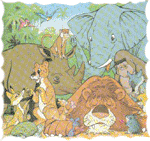
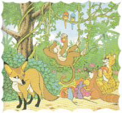

Kera Jadi Raja

Saat itu Sang Raja hutan "Singa" ditembak pemburu, semua penghuni hutan rimba jadi gelisah. Mereka tidak mempunyai Raja lagi. Tak berapa seluruh penghuni hutan rimba berkumpul untuk memilih Raja yang baru. Pertama yang dicalonkan adalah Macan Tutul, tetapi macan tutul menolak. "Jangan, melihat manusia saja aku sudah lari tunggang langgang," ujarnya. "Kalau gitu Badak saja, kau kan amat kuat," kata binatang lain. "Tidak-tidak, penglihatanku kurang baik, aku telah menabrak pohon berkali-kali." "Oh…mungkin Gajah saja yang jadi Raja, badan kau kan besar..", ujar binatang-binatang lain. "Aku tidak bisa berkelahi dan gerakanku amat lambat," sahut gajah.
Binatang-binatang menjadi bingung, mereka belum menemukan raja pengganti. Ketika hendak bubar, tiba-tiba kera berteriak, "Manusia saja yang menjadi raja, ia kan yang sudah membunuh Singa". "Tidak mungkin," jawab tupai. "Coba kalian semua perhatikan aku…, aku mirip dengan manusia bukan ?, maka akulah yang cocok menjadi raja," ujar kera. Setelah melalui perundingan, penghuni hutan sepakat Kera menjadi raja yang baru. Setelah diangkat menjadi raja, tingkah laku Kera sama sekali tidak seperti Raja. Kerjanya hanya bermalas-malasan sambil menyantap makanan yang lezat-lezat.

Penghuni binatang menjadi kesal, terutama srigala. Srigala berpikir, "bagaimana si kera bisa menyamakan dirinya dengan manusia ya?, badannya saja yang sama, tetapi otaknya tidak". Srigala mendapat ide. Suatu hari, ia menghadap kera. "Tuanku, saya menemukan makanan yang amat lezar, saya yakin tuanku pasti suka. Saya akan antarkan tuan ke tempat itu," ujar srigala. Tanpa pikir panjang, kera, si Raja yang baru pergi bersama srigala. Di tengah hutan, teronggok buah-buahan kesukaan kera. Kera yang tamak langsung menyergap buah-buahan itu. Ternyata, si kera langsung terjeblos ke dalam tanah. Makanan yang disergapnya ternyata jebakan yang dibuat manusia. "Tolong…tolong," teriak kera, sambil berjuang keras agar bisa keluar dari perangkap.
"Hahahaha! Tak pernah kubayangkan, seorang raja bisa berlaku bodoh, terjebak dalam perangkap yang dipasang manusia, Raja seperti kera mana bisa melindungi rakyatnya," ujar srigala dan binatang lainnya. Tak berapa lama setelah binatang-binatang meninggalkan kera, seorang pemburu datang ke tempat itu. Melihat ada kera di dalamnya, ia langsung membawa tangkapannya ke rumah.
Pesan Moral "Perlakukanlah teman-teman kita dengan baik, janganlah sombong dan bermalas-malasan. Jika kita sombong dan memperlakukan teman-teman semena-mena, nantinya kita akan kehilangan mereka".
Sumber dongeng : http://www.kumpulandongeng.com/cerita-anak/kera-jadi-raja/